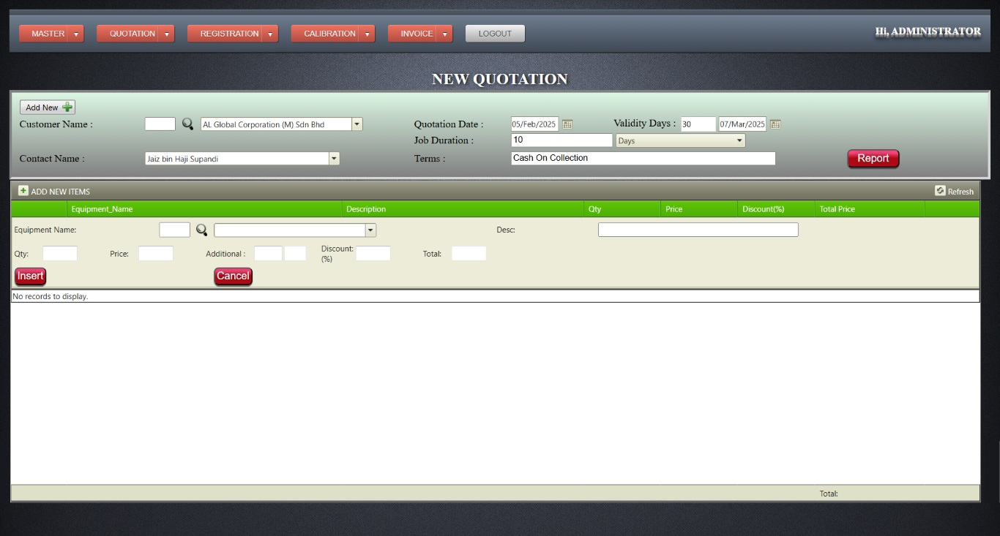

Asset Management System
SIRIM Berhad (Standards and Industrial Research Institute of Malaysia) is Malaysia’s national standards and certification body, functioning similarly to ISO.
Main objectives of SIRIM:
- To develop and maintain standards across Malaysia
- To conduct industrial research and development (R&D)
- To provide quality certification for industries
- To offer training and technical services for industries
- To provide testing services for consumer protection
- Electrical and electronic equipment
- Building materials
- Food safety
- Water-related equipment
- Air and water quality
- Prosthetics and medical devices
For that department, through my company, we have developed and provided a software system called Asset Management System.
Create, modify, View Quotation
- Creating new quotations
- Modifying quotations
- The items listed in the quotation are stored as data.
- The number of items, along with any associated components or accessories, are all saved here.
- For each quotation, jobs are created based on the number of items it contains.
- If any changes need to be made, there is a Quotation Modify page where the required modifications can be done.
- For each job, an individual is assigned who is solely responsible for inspecting the items. Upon completing the inspection, they will issue the appropriate certificate.
After completing the inspection of the assigned items, the inspector must log into the system using their designated password. Once logged in, they are required to enter the inspection details of the items. For this purpose, the Calibration Page must be used. On this page, an Excel sheet can be downloaded, updated with the necessary modifications, and then re-uploaded to the system. This process ensures that all inspection information for the items is properly recorded.
If any changes need to be made later, a separate page is provided, which allows the inspector to update the details accordingly.
Create, modify Invoice
The prices for all inspected items are automatically calculated and displayed on this page. If any adjustments are required, a separate page is provided where the values can be modified accordingly. On this page, an Excel sheet can be downloaded, updated with the necessary modifications, and then re-uploaded to the system. This process ensures that all inspection information for the items is properly recorded.